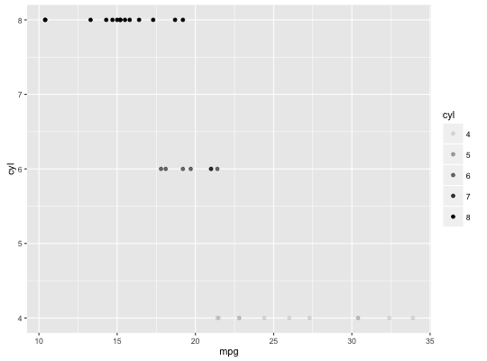
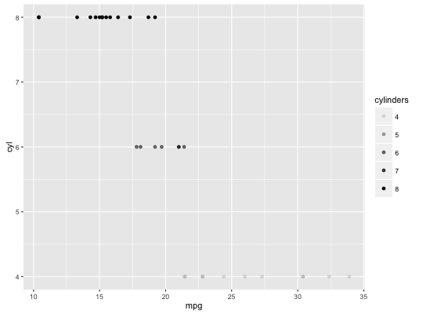
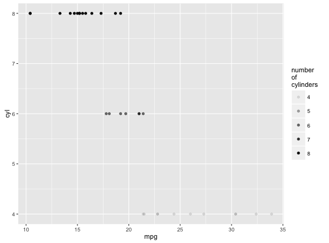
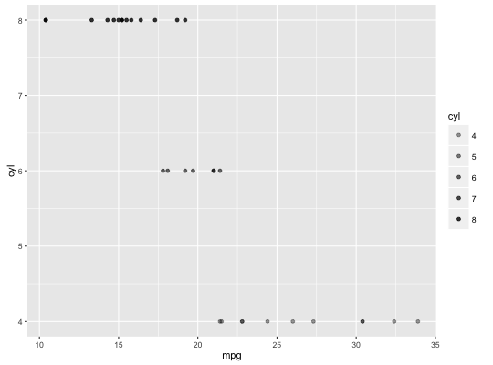
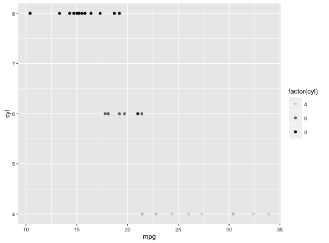
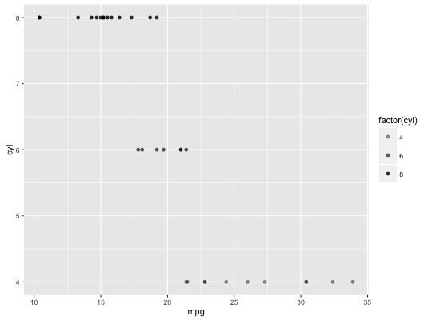

scale_alpha(..., range = c(0.1, 1))scale_alpha_continuous(..., range = c(0.1, 1))scale_alpha_discrete(..., range = c(0.1, 1))
continuous_scale
or discrete_scale as appropriate, to control name, limits,
breaks, labels and so forth.scale_alpha is an alias for scale_alpha_continuous since
that is the most common use of alpha, and it saves a bit of typing.
(p <- ggplot(mtcars, aes(mpg, cyl)) + geom_point(aes(alpha = cyl)))
p + scale_alpha("cylinders")
p + scale_alpha("number\nof\ncylinders")
p + scale_alpha(range = c(0.4, 0.8))
(p <- ggplot(mtcars, aes(mpg, cyl)) + geom_point(aes(alpha = factor(cyl))))
p + scale_alpha_discrete(range = c(0.4, 0.8))